| 重症度 | 臓器障害 | 治療 |
| 軽症 | 皮膚・関節炎・粘膜 | ヒドロキシクロロキン（HCQ）＋NSAIDs |
| 中等症 | 漿膜炎・血球減少 | 副腎皮質ステロイド（PSL 0.5mg/kg/日） |
| 重症 | ループス腎炎（class III/IV）・CNSループス | PSL高用量＋シクロフォスファミド |
| 最重症 | 難治性ループス腎炎 | ベリムマブ（抗BAFF抗体）・リツキシマブ |
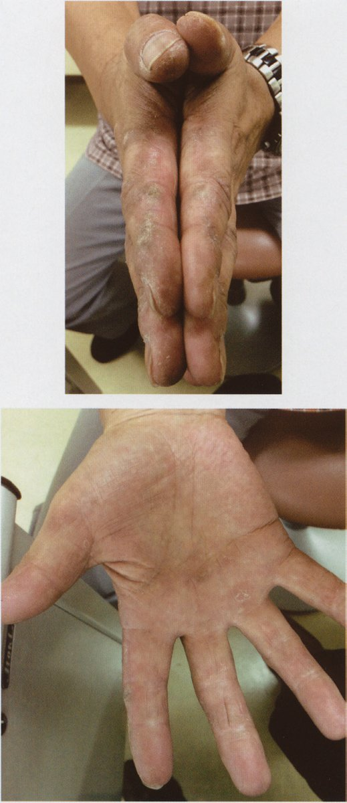
| 自己抗体 | 関連する臨床像 |
| 抗MDA5抗体 | 皮膚筋炎（筋症状なし）＋急速進行性ILD（致死的） |
| 抗ARS抗体（抗Jo-1等） | 筋炎＋ILD＋関節炎（ARS症候群） |
| 抗Mi-2抗体 | 典型的皮膚筋炎（皮疹が顕著・筋炎が軽い） |
| 抗TIF1-γ抗体 | 皮膚筋炎＋悪性腫瘍合併 |
| 抗SRP抗体 | 壊死性筋炎（CK著明高値） |
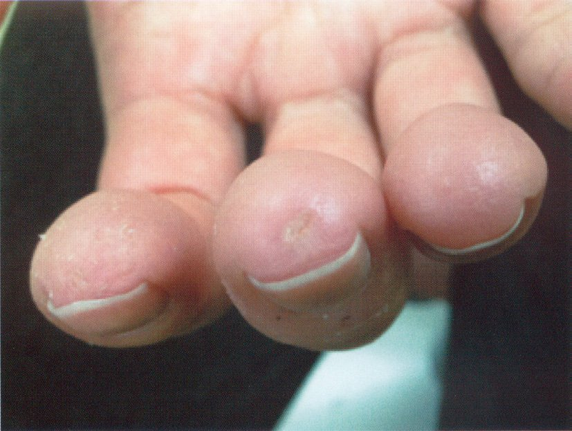
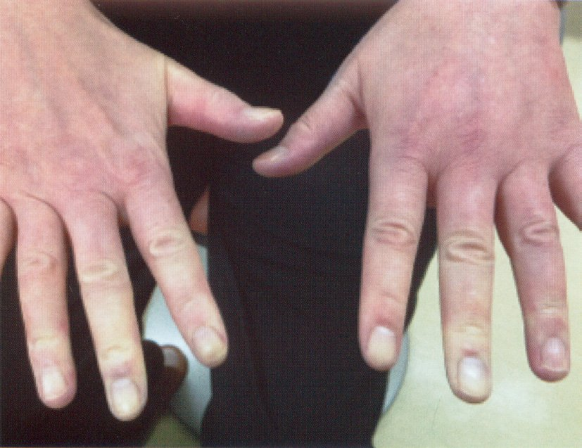
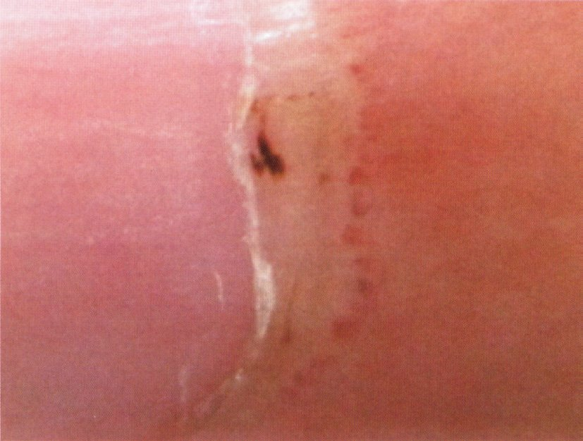
| 自己抗体 | 疾患 | 関連する臓器障害 |
| 抗MDA5 | 皮膚筋炎（CADM） | 急速進行性ILD |
| 抗Mi-2 | 皮膚筋炎 | 典型的皮疹 |
| 抗TIF1-γ | 皮膚筋炎 | 悪性腫瘍 |
| 抗ARS（Jo-1等） | 多発筋炎/皮膚筋炎 | 間質性肺炎＋関節炎（ARS症候群） |
| 抗Sm | SLE特異的 | 中枢神経ループス |
| 抗dsDNA | SLE | ループス腎炎（活動性マーカー） |
| 抗SS-A/SS-B | Sjögren・SLE | 新生児ループス・心ブロック |
| 抗Scl-70 | 強皮症（びまん型） | 間質性肺炎 |
| 抗セントロメア | 強皮症（限局型） | 肺高血圧症 |
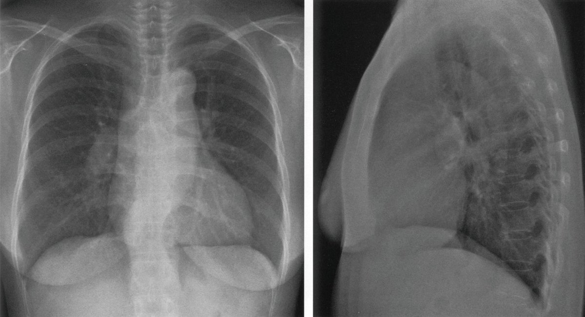
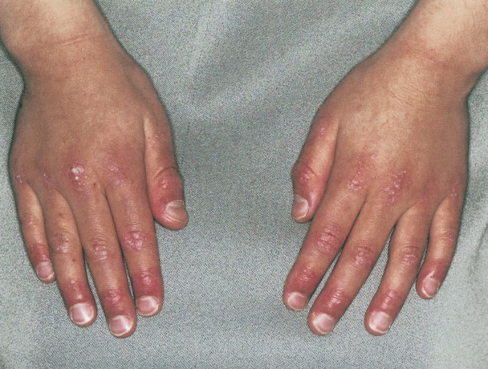
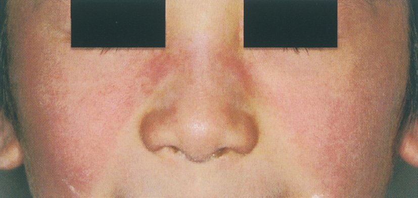
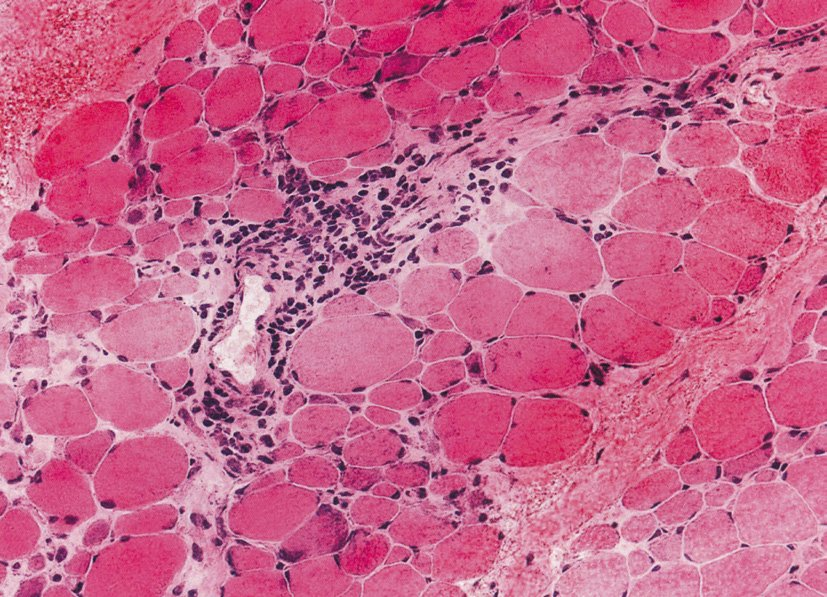
| 臓器 | 合併症 | 特徴 |
| 皮膚 | Raynaud・皮膚硬化・指尖潰瘍 | |
| 消化管 | 食道蠕動運動低下→GERD（胸やけ） | 食道下部2/3の筋萎縮 |
| 腸管 | 下痢・便秘・小腸拡張・吸収不良 | |
| 肺 | 間質性肺炎（ILD）＋肺動脈性肺高血圧（PAH） | びまん型→ILD多、限局型→PAH多 |
| 腎 | 強皮症腎クリーゼ（悪性高血圧） | ACE阻害薬が特効 |
| 心 | 心筋線維化・心外膜炎 |
| 疾患 | 腎障害 | 特徴 |
| SLE | ○ 多い（50%以上） | ループス腎炎（LN）がある |
| 結節性多発動脈炎（PAN） | ○ 多い | 腎動脈炎・腎梗塞 |
| IgA血管炎（ HSP） | ○ 多い | IgA腎症様病変 |
| 多発筋炎（PM） | × 少ない | 筋・肺が主病変。腎はほとんど侵さない |
| 強皮症 | ○ あり（腎クリーゼ） | 強皮症腎クリーゼ |
| 抗体 | 特徴 |
| 抗核抗体（ANA） | 感度99%。スクリーニング。ただし特異度低い |
| 抗dsDNA抗体 | 感度70%・特異度95%。活動性と相関。ループス腎炎マーカー |
| 抗Sm抗体 | SLE特異度高い（99%）が感度低い（25%） |
| 抗リン脂質抗体 | APS合併の場合に陽性 |
| 補体（C3/C4/CH50） | 活動期に低下 |
| 特徴 | 特発性Raynaud | 続発性Raynaud（強皮症等） |
| 年齢 | 若い女性（10〜30代） | 中高年 |
| 対称性 | 両側性 | 非対称のことも |
| 皮膚変化 | なし | 手指腫脹・皮膚硬化・指尖潰瘍 |
| 血管病変 | 機能的（可逆性） | 構造的（指尖壊疽リスク） |
| 基礎疾患 | なし | 強皮症・MCTD・SLE・振動病等 |
| 血管造影 | 正常 | 閉塞性血管病変 |
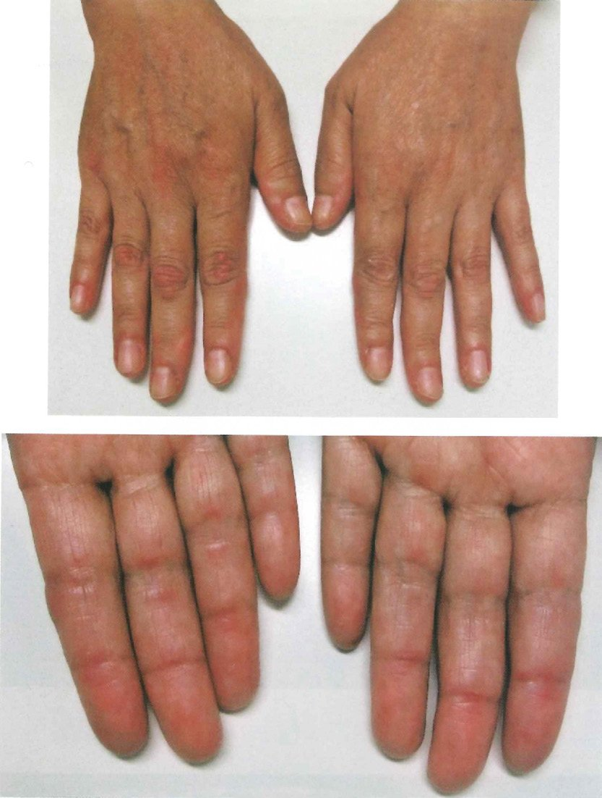
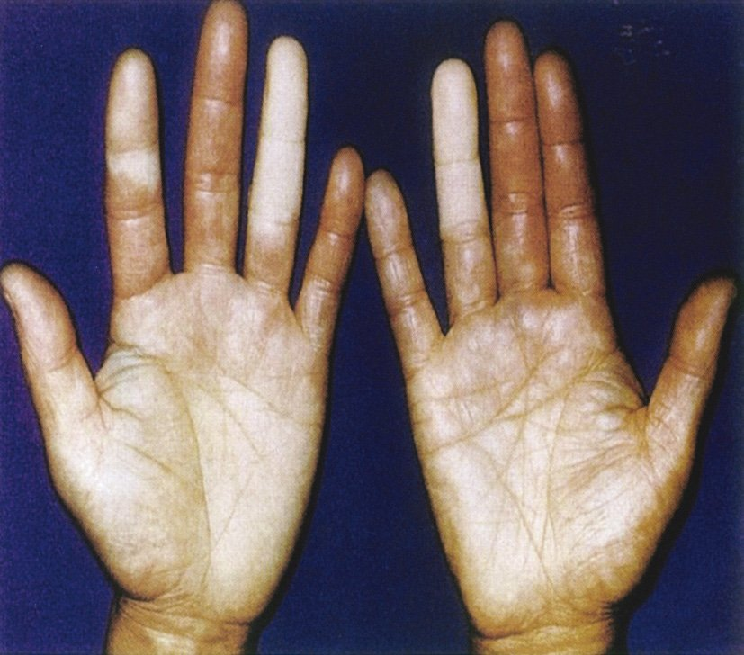
| 自己抗体 | 疾患 | ポイント |
| 抗Sm | SLE | 高特異度（99%）だが感度低い |
| 抗dsDNA | SLE | 活動性マーカー・ループス腎炎 |
| 抗Scl-70（トポイソメラーゼI） | 強皮症（びまん型） | ILD合併多い |
| 抗RNAポリメラーゼIII | 強皮症（びまん型） | 腎クリーゼと強い関連 |
| 抗セントロメア | 強皮症（限局型・CREST） | PAH合併多い |
| MPO-ANCA | 顕微鏡的多発血管炎（MPA） | |
| PR3-ANCA | 多発血管炎性肉芽腫症（GPA） | |
| 抗RNP | MCTD・SLE | |
| 抗ARS（Jo-1等） | 多発筋炎/皮膚筋炎 | ILD・関節炎合併 |
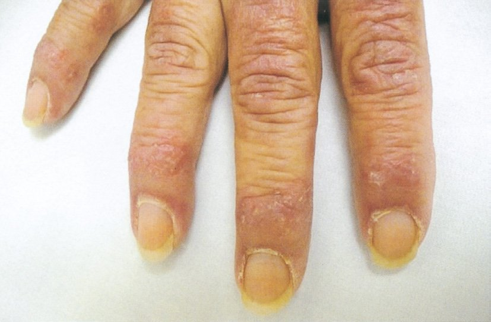
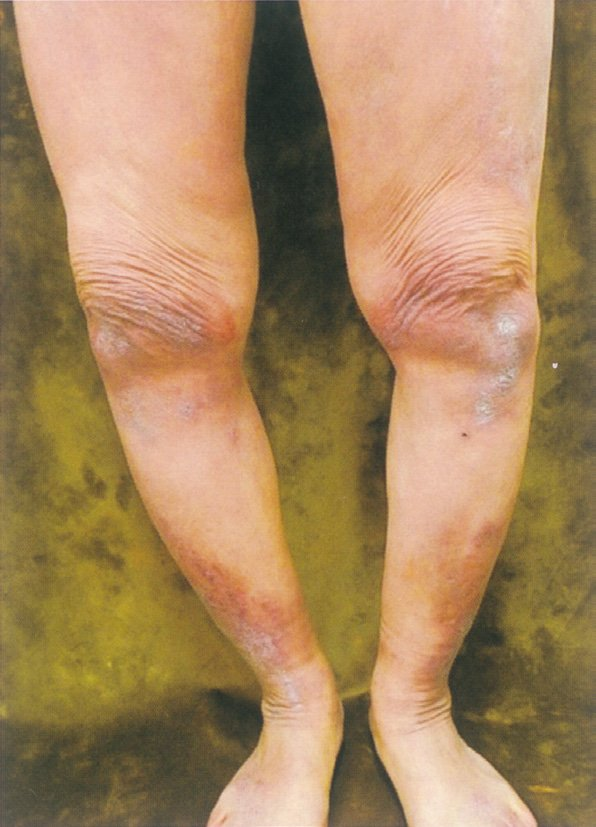
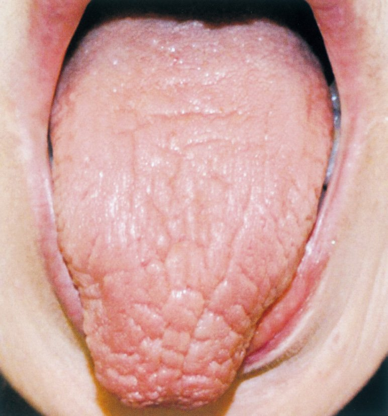
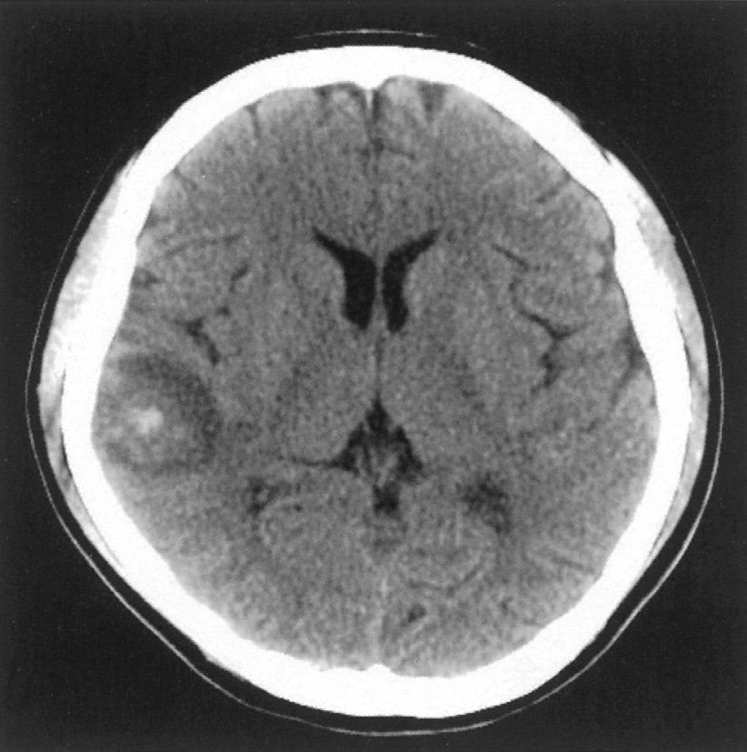
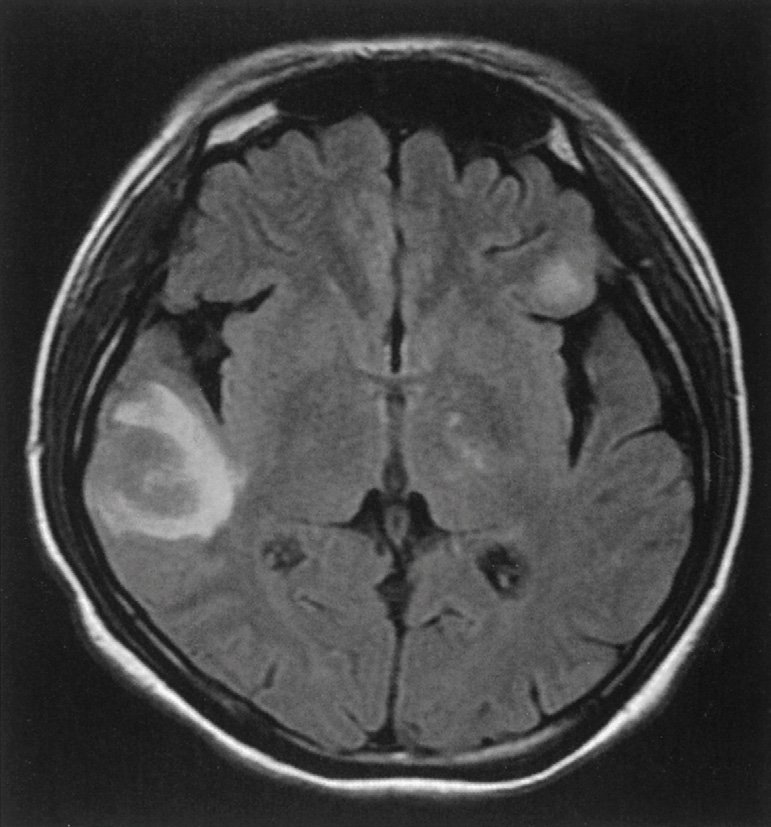
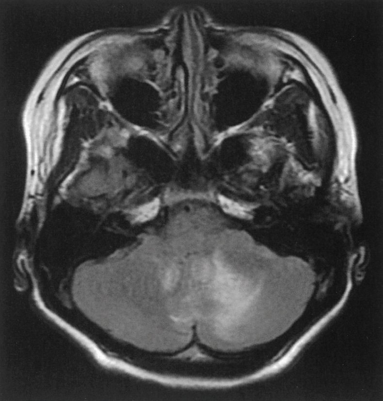
| 指標 | SLE活動期の変化 | 備考 |
| CRP | ↑しないことが多い | SLEの特徴→感染症合併でCRP↑ |
| 補体（CH50・C3・C4） | ↓（低下） | 免疫複合体による補体消費→最重要指標 |
| 抗dsDNA抗体価 | ↑（上昇） | 活動性・ループス腎炎マーカー |
| フィブリノゲン | 急性期反応物質（非特異的） | SLE特異的でない |
| 総コレステロール | ネフローゼで↑ | 疾患活動性でない |
| 検査 | SLE活動期 | 備考 |
| 赤沈 | 亢進↑ | 炎症・低補体・高グロブリン→赤沈亢進 |
| 尿蛋白 | 陽性（ループス腎炎） | 症例に蛋白尿あり |
| 血小板 | 減少 | 自己抗体による破壊 |
| リンパ球 | 減少（リンパ球減少症） | SLEの診断基準の一項目 |
| 補体 | 低下（CH50↓） | 免疫複合体消費 |
| CRP | 正常〜軽度上昇 | 高値なら感染合併 |
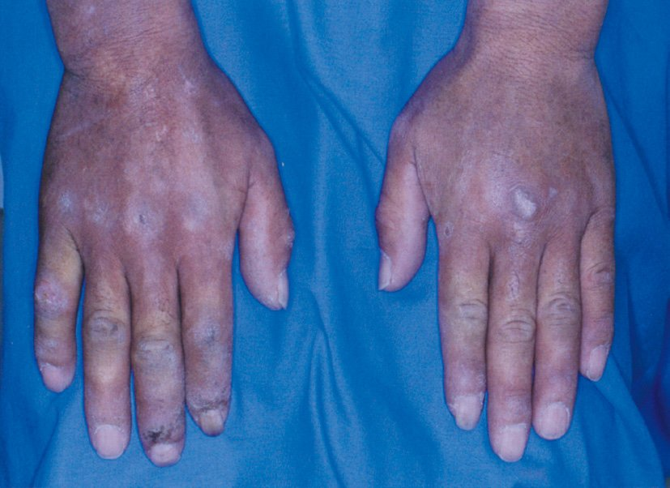
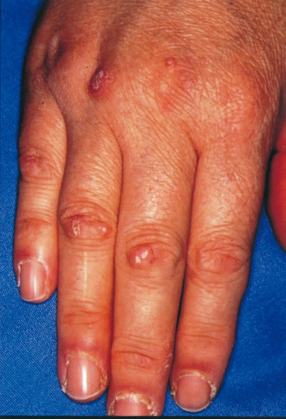
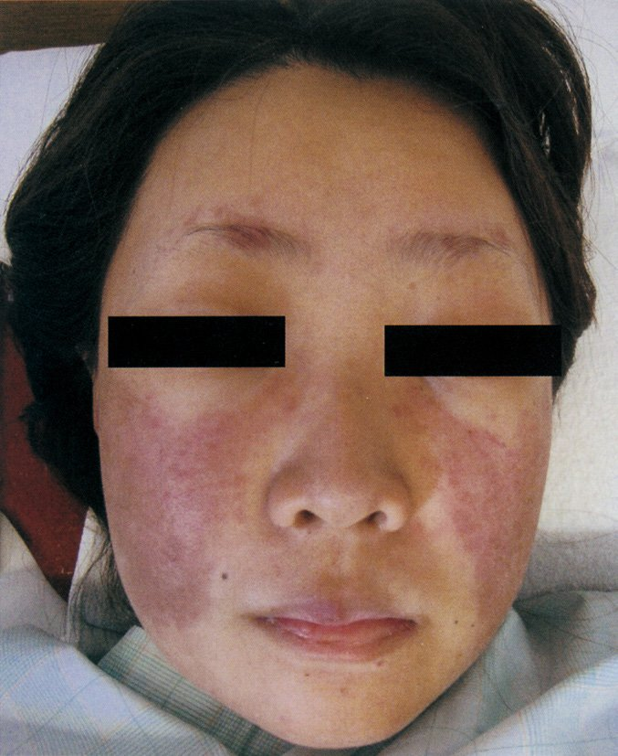
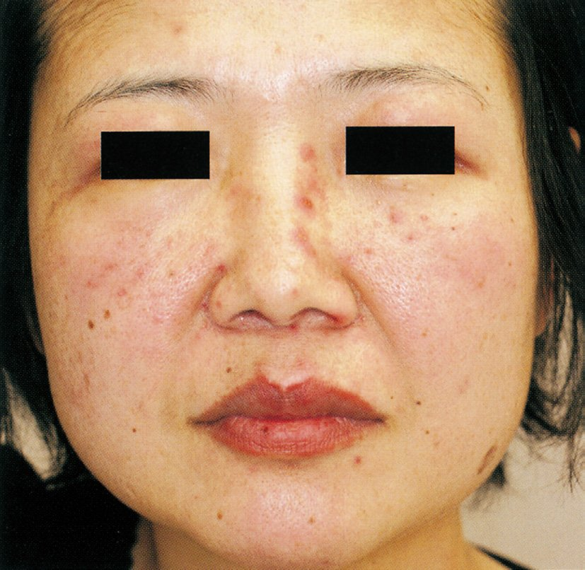
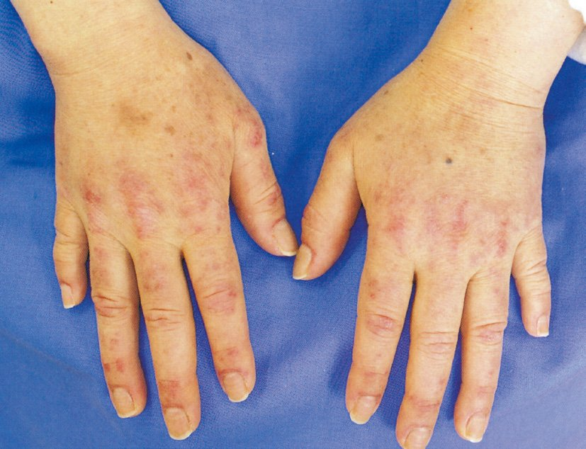
| 検査 | SLEへの感度 | 特異度 | 用途 |
| 抗核抗体（ANA） | 99%（最高） | 60〜80%（低い） | スクリーニング |
| 抗dsDNA抗体 | 70〜80% | 95%（高い） | 活動性マーカー・LN |
| 抗Sm抗体 | 25%（低い） | 99%（最高） | 特異的確認 |
| 抗リン脂質抗体 | 20〜30% | 高い | APS合併 |
| 抗RNP抗体 | 30% | 中程度 | MCTD合併 |
| カテゴリ | 原因 | 備考 |
| 結合組織疾患 | 強皮症・SLE・MCTD・PM/DM | Raynaud続発性の最多原因 |
| 職業性 | 振動工具（チェーンソー等） | 白ろう病 |
| 血管疾患 | 閉塞性動脈硬化症 | 高齢・動脈硬化 |
| 薬剤 | β遮断薬・エルゴタミン | 血管収縮誘発 |
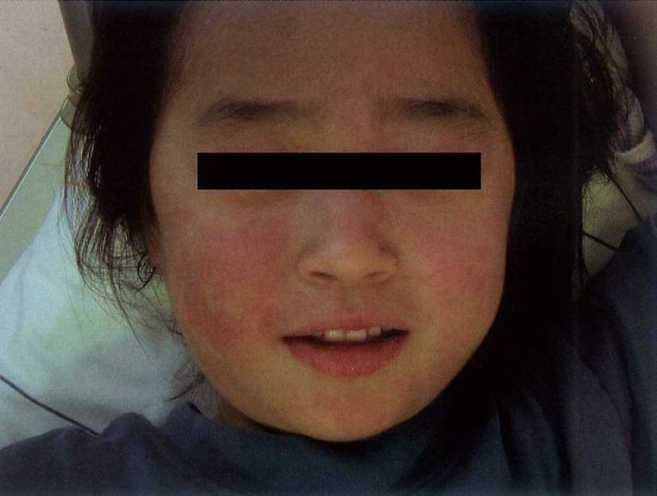
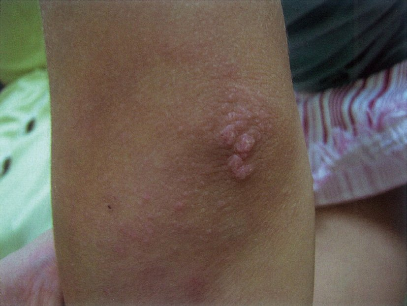
| 合併症 | 頻度・特徴 |
| 悪性腫瘍 | 約20〜30%（56歳→高リスク）。体重減少5kg→悪性腫瘍疑い |
| 間質性肺炎（ILD） | PM/DMの20〜50%。抗Jo-1・MDA5抗体陽性で高リスク |
| 心筋炎 | 重症DMで起こりうる（比較的まれ） |
| 嚥下障害 | 咽頭筋力低下→誤嚥性肺炎リスク |
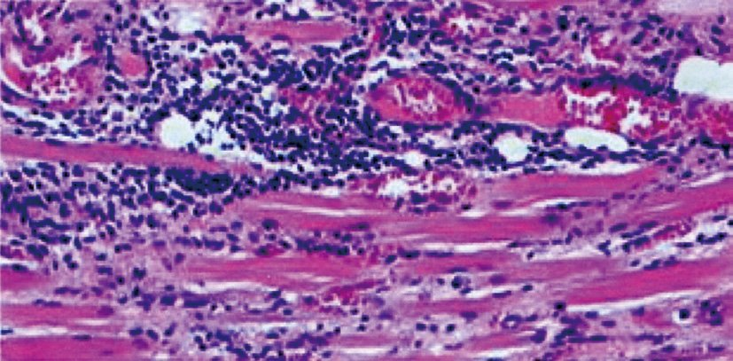
| 病変 | 予後への影響 | 備考 |
| 皮膚病変 | 直接的致死性は低い | 機能障害・QOL低下 |
| 関節病変 | 致死性低い | 機能障害 |
| 肺病変（ILD・PAH） | 予後規定因子（主要な死因） | 肺高血圧症・肺線維症 |
| 腎病変（腎クリーゼ） | 予後規定因子（急性増悪） | ACE阻害薬で改善 |
| 消化管病変 | 栄養障害・QOL低下（直接致死性は低い） | GERD・吸収不良 |
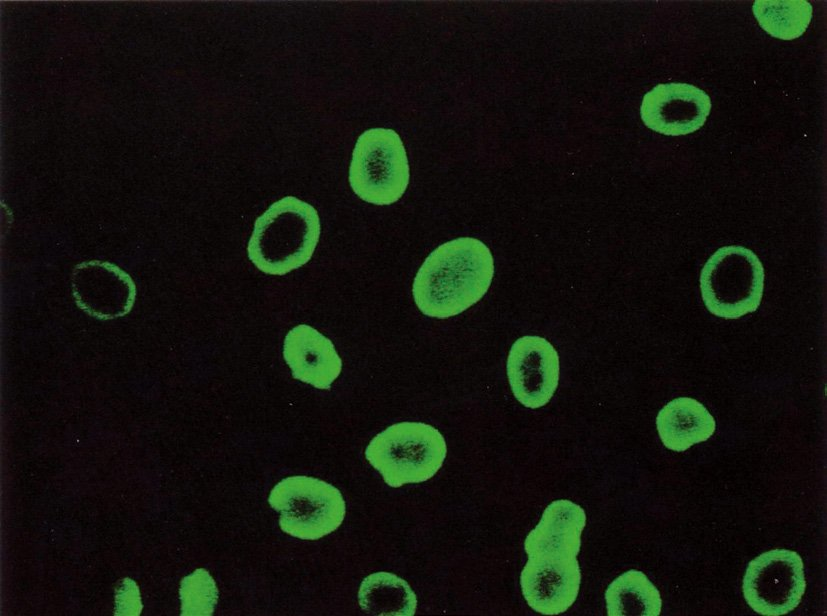
| 強皮症のタイプ | 特徴的抗体 | 合併症 |
| びまん型（dcSSc） | 抗Scl-70（トポイソメラーゼI）抗体 | 間質性肺炎（ILD）・皮膚硬化範囲が広い |
| 限局型（lcSSc/CREST） | 抗セントロメア抗体 | 肺高血圧症（PAH）・指尖潰瘍 |
| びまん型 | 抗RNAポリメラーゼIII | 強皮症腎クリーゼと強い関連 |
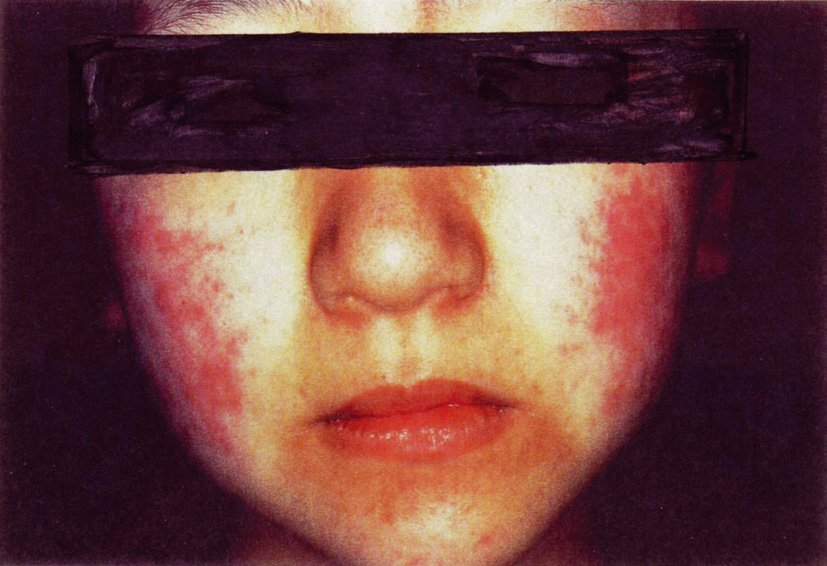